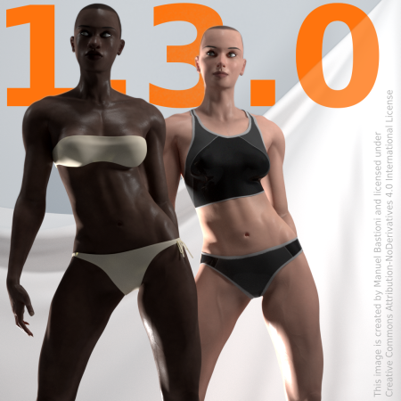
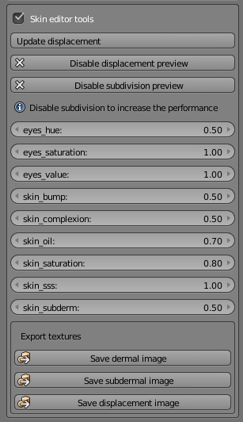
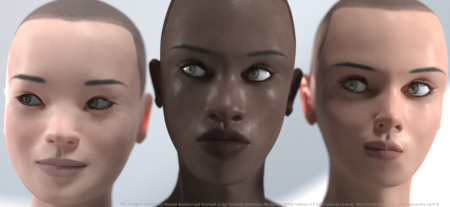
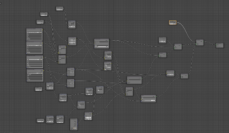
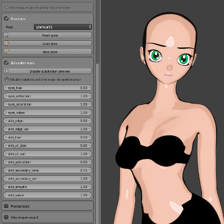
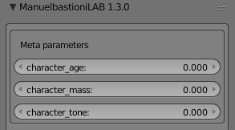
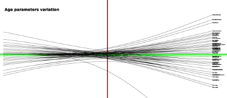

Release notes for ManuelBastioniLAB 1.3.0
New features
ManuelBastioniLAB 1.3.0 (download here) introduces two fundamental new tools: the skin editor and the meta parameters.

The skin editor is a powerful tool composed by two main parts. The first is the parameters editor, an intuivive set of sliders for easily modify the values of skin complexion, skin bump, skin oil, skin saturation, skin subsurface scattering and more.

Behind this simple interface there is a set of complex shaders for human skin, human eyes, toon skin and toon eyes. These shaders are developed in order to simulate the variety of skin tones and work under any lighting condition.

The textures (four for each character: dermal, subdermal, complexion and displacement) are carefully created in order to reproduce only the natural skin tone variation without traces of shadows or reflections.

The video below (published on the official Youtube channel) was created during the development of the tool and shows the level of realism reached in a real time Blender session.
The skin editor also includes a complete and flexible toon shader, automatically used for anime character.

The second element of the skin editor is the displacement system, an algorithm that automatically creates the bump map from the values of age, mass and tone parameters. For example, an older character will have more wrinkles, while a muscled character will have more noticeable veins. The texture is computed in few seconds and can be saved as png.
The image below, created during an early stage of development, shows the effect of the wrinkle layers that is automatically created pressing the button "Update displacement".
Another powerful feature included in 1.3.0 is the meta parameter technology. Using meta parameters the definition of the main traits of the character is matter of few seconds. The user interface is very easy to understand: just three intuitive sliders for the values of age, mass and tone.

Behind these three operators there is a complex algorithm that evaluates in real time tens of body features, using a non-linear computation to simulate the shape of human body in different conditions.
As example, the image below shows the overview of the non-linear function used to calculate the effect of the age from 18 to 70 y.o.

Another important feature included in the version 1.3.0 is a massive improvement of the morphing-expression library. Now the characters are even more realistic, with more details for nose and eyes and expressions that better simulate the muscles extension and compression.
The topology is improved too: there are more vertices around the eyes, some poles in the abdominal area are fixed and the geometric eyebrows are removed in order to be replaced with more flexible textures.

More new features
Over the metaparameters and skin editor, there are more new features in 1.3.0
- Loading and saving custom poses.
- Professional lights studio setup.
- Option to automatic re-initialize existing characters.
- Iris size modifier.
- Neck curve modifier.
- Modifier for cheek mass and tone.
- Symmetric standing pose.
- New init option to clean the approximation errors and manual edits.
Features improvement
- Finalize button now removes the custom properties.
- Errors and warning are written to console too. The log file contains info, warning and errors.
- Proxy panel now includes more tools to easily check and create proxies.
- Improved breast morphs.
- Added reset button for expressions.
GUI usability
Version 1.3.0 improves the usability and optimizes the screen space.
- Body parameters use full column in case the user doesn't need measures.
- Improved readability removing redundant labels.
Code improvement
- Improved automodelling engine.
- Optimized poses and expression libraries.
- Optimized the joints database
- Optimized boundingbox database
- More robust system to handle the properties data directly from saved blend files.
- Now the software checks the version used to save the blend file instead of the fingerprints
- Separated GUI properties from object properties
Bug fixes
- Fixed eyelids morphing in male model
- Fixed nose model
- Fixed breast morphings
- Fixed the normals of tongue
- Fixed teeth bug in expressions.
- Fixed the verts in anime fingers.
- Fixed cheek mass bug in random generator.
- Fixed the verts in anime fingers.